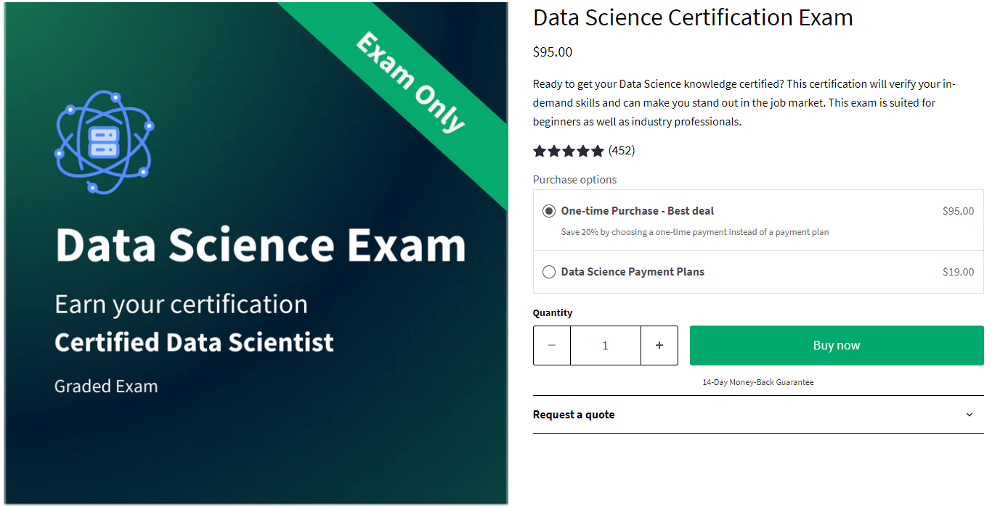
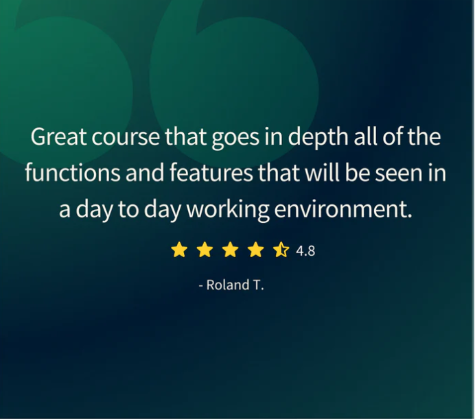
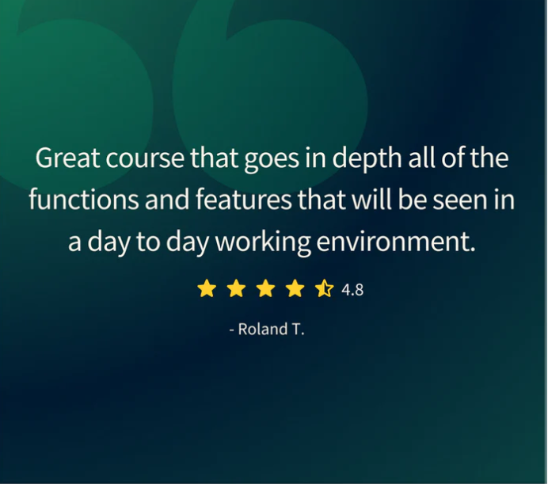

W3Schools Data Science Certificate
W3Schools offers an Online Certification Program.
The perfect solution for busy professionals who need to balance work, family, and career building.
More than 50,000 certificates already issued!
Document your skills
- Improve your career
- Study at your own pace
- Save time and money
- Known brand
- Trusted by top companies
Who Should Consider Getting Certified?
Any student or professional within the digital industry.
Certifications are valuable assets to gain trust and demonstrate knowledge to your clients, current or future employers on an ever-increasing competitive market.
W3Schools is Trusted by Top Companies
W3Schools has over two decades of experience with teaching coding online.
Our certificates are recognized and valued by companies looking to employ skilled developers.
Save Time and Money
Show the world your coding skills by getting a certification.
The price is a small fraction compared to the price of traditional education.
Document and validate your competence by getting certified!
Exam Overview
- Fee: 95 USD
- Achievable certification levels:
- Intermediate (40%)
- Advanced (75%)
- Professional (90%)
- Number of questions: Adaptive, 60 on average
- Requirement to pass: Minimum 40% - Intermediate level
- Time limit: 60 minutes
- Number of attempts to pass: 3
- Exam deadline: None
- Certification Expiration: None
- Format: Online, multiple choice

 


Advance Faster in Your Career
Getting a certificate proves your commitment to upgrading your skills.
The certificate can be added as credentials to your CV, Resume, LinkedIn profile, and so on.
It gives you the credibility needed for more responsibilities, larger projects, and a higher salary.
Knowledge is power, especially in the current job market.
Documentation of your skills enables you to advance your career or helps you to start a new one.
How Does It Work?
- Study for free at W3Schools.com
- Study at your own speed
- Test your skills with W3Schools online quizzes
- Apply for your certificate by paying an exam fee
- Take your exam online, at any time, and from any location
Get Your Certificate and Share It With The World
Each certificate gets a unique link that can be shared with others.
Validate your certification with the link or QR code.
Check how it looks like:

Share your certificate on LinkedIn in the Certifications section in just one click!
Document Your Skills
Getting a certificate proves your commitment to upgrade your skills, gives you the credibility needed for more responsibilities, larger projects, and a higher salary.
Looking to add multiple users?
Are you an educator, manager or business owner looking for courses or certifications?
We are working with schools, companies and organizations from all over the world.
Click For Top of page